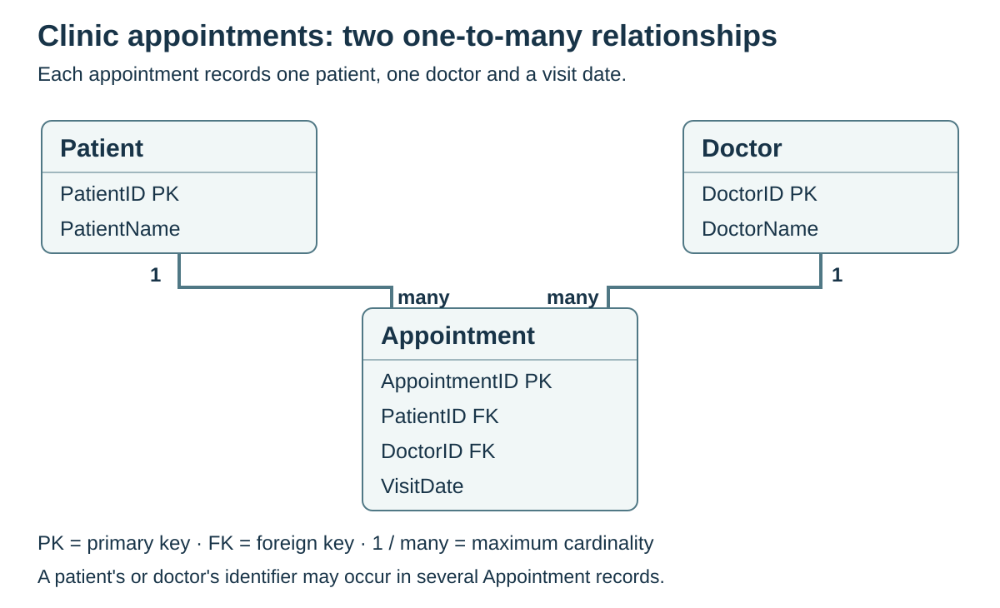

Document entities, keys and relationship cardinality
Visual overview
Clinic E-R design

Visual transcript
- Patient(PatientID PK, PatientName).
- Doctor(DoctorID PK, DoctorName).
- Appointment(AppointmentID PK, PatientID FK, DoctorID FK, VisitDate).
- Each appointment references one patient and one doctor; either parent can have many appointments.
Derive the design from requirements
Extract entity types from the facts that the organisation needs to store, then identify each entity's key and relevant attributes. Connect entities only when the business rules support an association. An E-R diagram records this structure rather than a sequence of processing steps.
Identify a particular appointment
In this clinic, each appointment involves exactly one patient and one doctor. A patient or doctor may have many appointments. Appointment therefore stores both foreign keys, and its separate AppointmentID allows the same patient to visit the same doctor on different occasions.
Explain ownership of a fact
Begin with facts to store, not a list of all nouns in a paragraph. A clinic needs patient details, doctor details and the date of each appointment. The appointment is a distinct occurrence because a patient can see the same doctor again. Place VisitDate there rather than on Patient or Doctor, both of which take part in many visits.
Test the model against changed conditions
After drawing, test the design with a new patient who has no appointments, two appointments for one patient, and a later return to the same doctor. The diagram must permit the stated cases without overwriting an earlier visit. If an appointment can involve several doctors instead, the present single DoctorID field is insufficient; a separate appointment-doctor association is needed.
Worked example · From a clinic rule to a diagram
- Find entities
Store patient facts in Patient, doctor facts in Doctor, and the date of a particular visit in Appointment.
- Identify rows
Choose PatientID, DoctorID and AppointmentID as primary keys.
- Read both directions
One appointment names one patient; one patient may attend many appointments. Apply the equivalent rule for Doctor.
- Place the references
PatientID and DoctorID are foreign keys in Appointment, on the many side of each relationship.
Core explanation · Exam essentials
- An E-R diagram records entities, keys and relationships justified by business rules.
- Read cardinality in both directions and store facts on the entity or association they describe.